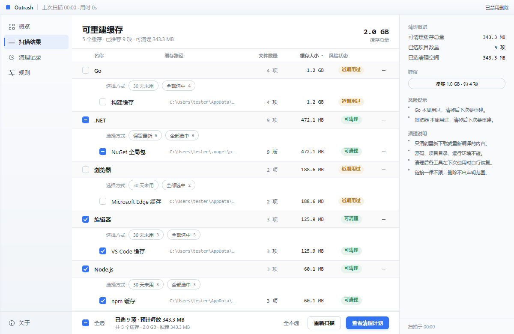

01
扫描
按各工具的环境变量和默认位置逐个统计；读不到的位置会如实标出。
开源 · 跨平台 · 离线运行
outrash 扫描本机各软件留下的可重建缓存——开发依赖、浏览器和编辑器的临时文件——勾选后一次清掉。只碰能重新下载或重新编译的部分。
Windows · macOS · Linux · MIT 许可

01 · 怎么用
01
按各工具的环境变量和默认位置逐个统计；读不到的位置会如实标出。
02
推荐已经勾好：只勾超过 30 天没用过的，多版本的包保留最新版。也可以只看某个盘。
03
一个按钮，逐项显示进度，中途可取消；每个缓存怎么回来，写在路径旁边。
界面四页：概览、扫描结果、清理记录、规则。中文 / English 随时切换。
02 · 不做的事
另有两条硬限制：不跟随链接；盘符根及其下一级目录一律拒绝。
03 · 收录范围
收录的都是软件会自行重建的内容：下载来的依赖、编译产物、浏览器与编辑器的临时文件。
完整清单在应用的「规则」页：每条路径和优先读取的环境变量都在那里。缓存放在别处？设置对应环境变量，程序会优先读取。
04 · 下载
最新版在 GitHub Releases。免费、开源、MIT 许可。
安装包，或免安装的 .exe
Apple 芯片与 Intel 的 .app
.deb，或可执行 tar.gz（amd64 / arm64）
macOS 包未签名：首次打开请右键 → 打开。